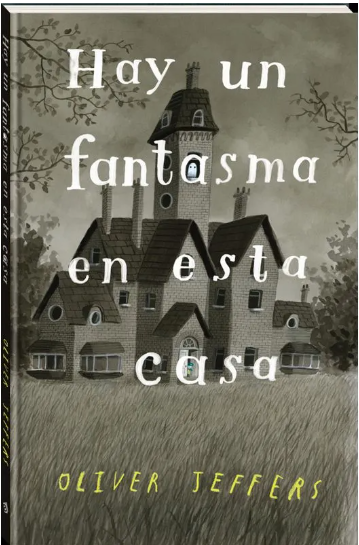

La vavaca y el primo Pinpín
Editorial: Rey naranjo (2012)
Este es un libro de cómic, sin texto, que permite seguir una historia de arte procesual para todas las edades. La historia es divertida y hace un buen uso de los elementos del cómic.
Camuñas

Editorial: Oqo editora (2012)
Es un cuento en rima sobre un monstruo malvado que no se corta las uñas. Este cuento permite que los niños y niñas se rían de los juegos de palabras y permite hacer preguntas como ¿Qué creen que va a pasar después?
Hay un fantasma en esta casa
Editorial: Fondo de cultura económica
Este es un libro con un diseño bellísimo que sorprende a los niños, juegan a buscar a los fantasmas por las páginas. Es un libro bien pensado y ayuda a trabajar el tema del uso de los colores y creación de personajes.
Camino a casa
Editorial: Fondo de cultura económica (2019)
Este es un libro que genera mucha recordación. Se pueden hacer, a partir de su lectura, muchos juegos de creación, desde narrar sus propios recorridos diarios, como ampliar su contexto territorial y familiar. La historia permite también comprender las metáforas visuales y textuales. Es un cuento corto y lindo.